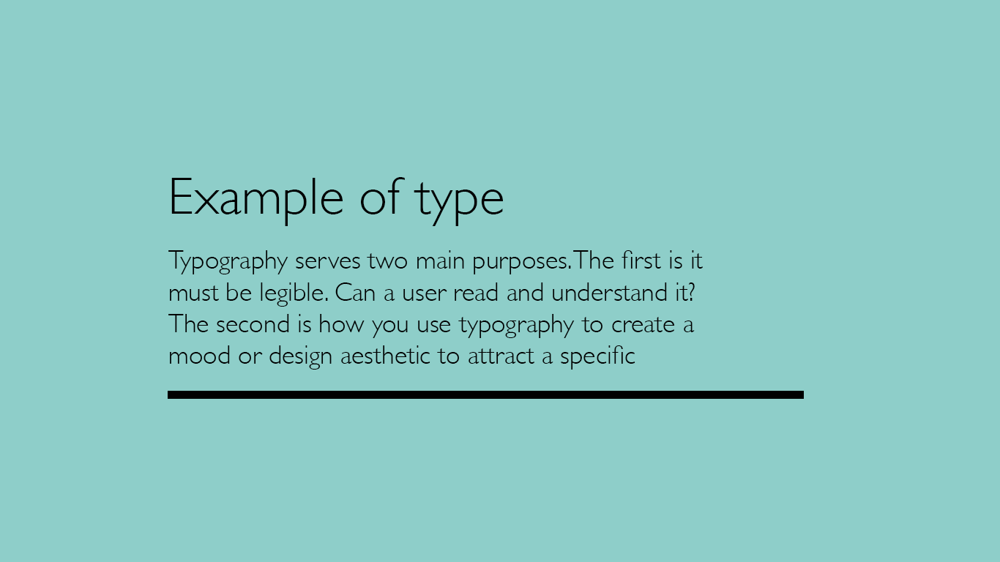

A typeface is a collection of fonts while a font refers to a specific style or weight within a typeface family. So let’s put this context with an example. Helvetica is a typeface. But Helvetica Bold is a specific font within the Helvetica typeface family. Here’s a visual example so you can see the difference between a typeface and fonts.

 Photo source: Adobe Stock by Uuganbayar
Photo source: Adobe Stock by Uuganbayar